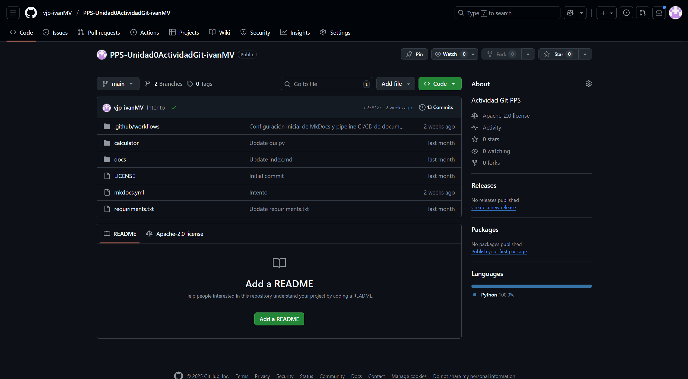

Creación de Proyecto y Repositorio
1. Crear un nuevo repositorio público en GitHub
-
Crea un repositorio con el nombre:
PPS-Unidad0ActividadGit-TuNombre-
Debe ser público
-
Debe contener un archivo README

-
2. Clonar el repositorio en tu equipo
git clone git@github.com:$Tu_usuario_github/PPS-Unidad0ActividadGit-$TuNombre.git
Si aparece el mensaje:
The authenticity of host 'github.com (140.82.121.4)' can't be established. ED25519 key fingerprint is SHA256:+DiY3wvvV6TuJJhbpZisF/zLDA0zPMSvHdkr4UvCOqU.
Are you sure you want to continue connecting (yes/no/[fingerprint])?
Responde: yes
Luego entra en la carpeta:
cd PPS-Unidad0ActividadGit-$TuNombre
3. Estructura del proyecto
Debe quedar así:
PPS-Unidad0ActividadGit-TuNombre/ ├── calculator/ │ ├── init.py │ └── gui.py ├── docs/ │ └── index.md ├── mkdocs.yml ├── requirements.txt
4. Crear la estructura
mkdir calculator docs touch calculator/__init__.py calculator/gui.py docs/index.md mkdocs.yml requirements.txt ls -l *
5. Comprobar el estado del proyecto
git status
Verás archivos sin seguimiento.
6. Añadir archivos al área staged
git add .
Comprueba nuevamente:
git status
7. Ver estructura en árbol
tree -a
Verás la carpeta oculta .git que contiene la estructura interna de Git.
8. Añadir contenido a los archivos
Edita los archivos:
-
__init__.py -
gui.py -
index.md -
mkdocs.yml -
requirements.txt
Y revisa el estado:
git status
Vuelve a añadirlos:
git add .
9. Confirmar los cambios (commit)
git commit -am "creando los archivos"
10. Subir los cambios
git push origin main
Verifica en GitHub que todo esté correcto.
11. Probar la calculadora
Instalar Tkinter (si no lo tienes):
sudo apt install python3-tk
python3 calculator/gui.py
Clonar un repositorio
-
Crea una carpeta llamada:
PPS-Unidad0ActividadGit-TuNombreCopia -
Entra en ella y clona:
git clone git@github.com:$Tu_usuario_github/PPS-Unidad0ActividadGit-$TuNombre.git
- Borra esa carpeta y vuelve al proyecto original.
Levantar un pequeño Servidor Web con PHP
1. Crear archivo HTML
echo "<h1> hola¡¡¡ Bienvenidos a la clase de PPS</h1>" >> index.html
git add .
git commit -am "añadido index.html"
2. Levantar el servidor
php -S 0:8080
Abre otra pestaña del terminal.
Visita:
3. Modificar index.html
Edita el archivo y refresca el navegador para ver los cambios.
4. Ver estado y diferencias
git status
git diff index.html
5. Restaurar archivo a versión previa
git restore index.html
Refresca el navegador.
6. Confirmar y subir cambios
git add .
git commit -am "actualizando proyecto" git push
7. Mover archivo con git mv
git mv index.html index.html.save
Detén el servidor PHP si sigue activo:
Ctrl + C
Git Log
Consulta la documentación:
https://git-scm.com/book/es/v2/Fundamentos-de-Git-Ver-el-Historial-de-Confirmaciones
Ver historial
git log
Últimos 3 commits
git log -3
Mostrar logs en una línea
git log --pretty=oneline
Últimos 2 commits con diferencias
git log -p -2
Cambios del último día
git log --since=1.day
Ramas
1. Ver ramas
git branch --list
2. Eliminar archivo y guardar cambios
git rm index.html.save
git commit -am "eliminando index.html.save" git push origin main
3. Crear nueva rama dev
git checkout -b dev
Subirla al remoto:
git push origin dev
En GitHub puedes comparar las ramas y ver que tienen contenido diferente.